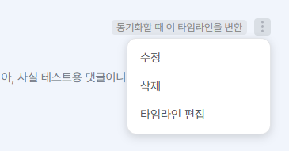
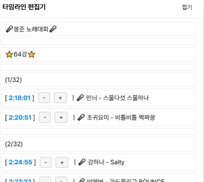

v1.5.2 주요 변경사항
-
새 기능: 타임라인 편집
- 기존 기능인 타임라인 댓글 동기화 시 타임라인을 수정하고 복사하는 기능을 동기화하지 않고도 일반 댓글의 내용으로부터 가져올 수 있게 타임라인 편집 기능을 추가했습니다.
- 타임라인이 포함된 댓글의 더보기 옵션(⫶)을 누르면 타임라인 편집 버튼이 나타납니다.


-
이전 채팅 복원
- 이제 다음 영상 복원 구간이 0초에 도달하면 버튼이 비활성화됩니다.
처음 설치하셨나요? 어떤 기능이 있는지 알아보세요.
▶
버그 수정 내역 보기
- 복원된 이전 채팅이 발생한 시점으로 이동하는 기능이 채팅 전체 범위에 적용되던 문제를 수정했습니다.